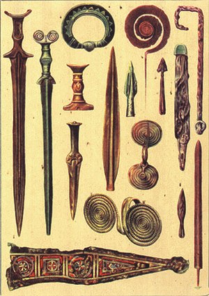
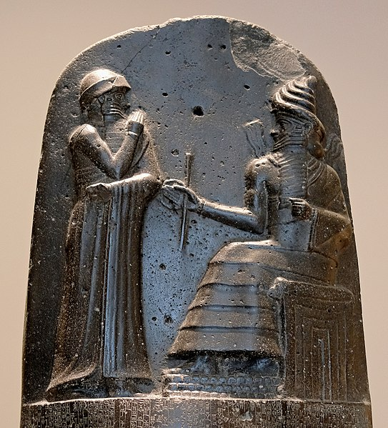
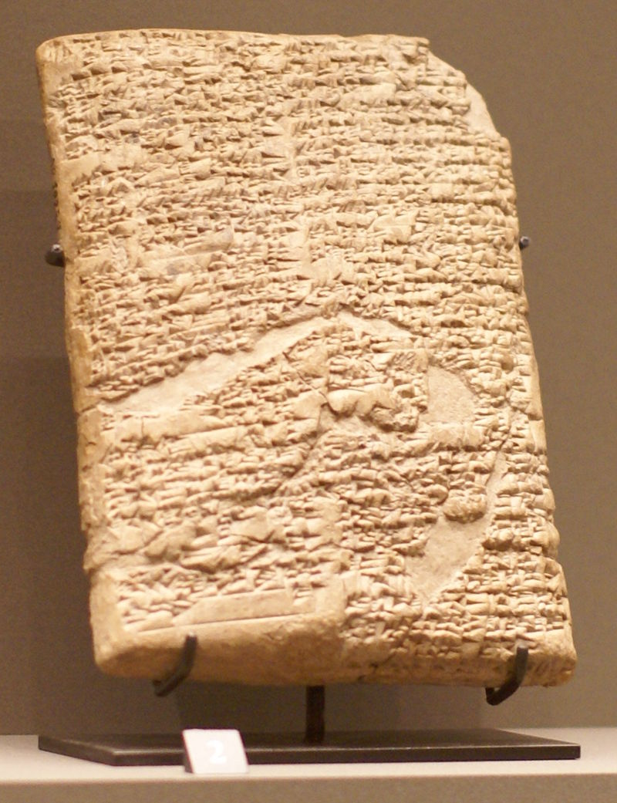
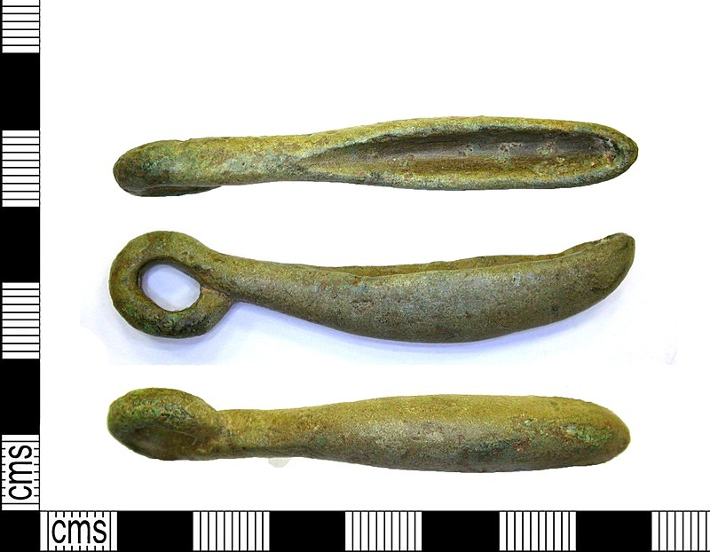
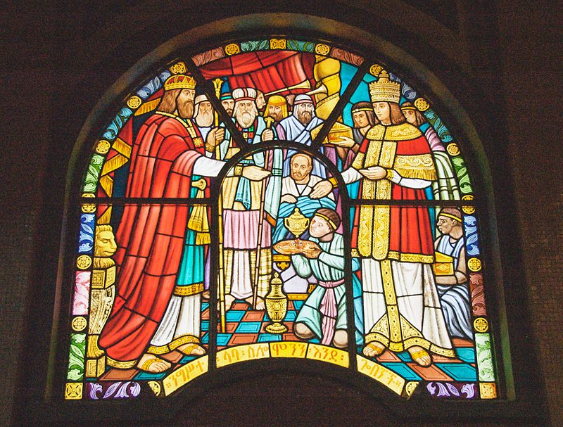
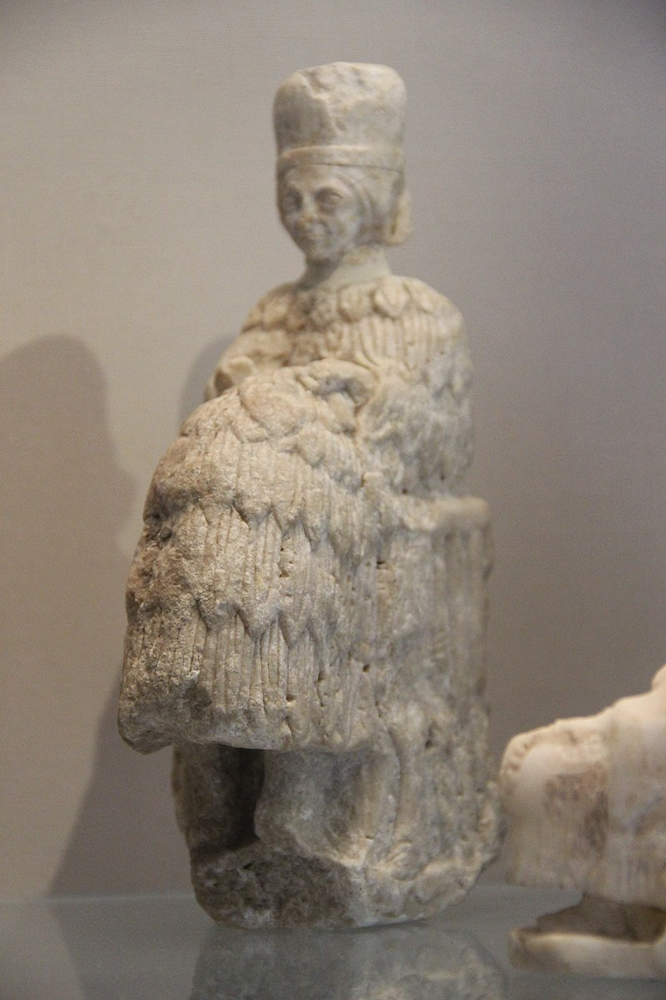
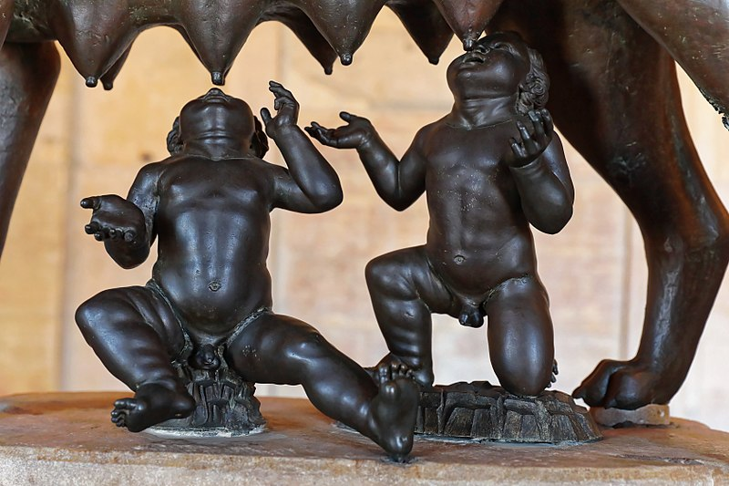
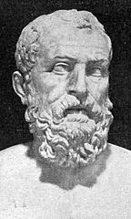

Badacze z Uniwersytetu w Tybindze i z Aten zidentyfikowali czaszkę Homo sapiens, której wiek szacuje się na 210 tysięcy lat. Czaszka została znaleziona w greckiej jaskini i jest zdecydowanie najstarszym śladem człowieka współczesnego w Europie.
Neolit (gr. néos „nowy” i líthos „kamień”), młodsza epoka kamienia, epoka kamienia gładzonego – ostatni okres epoki kamienia (poprzedzający epokę brązu). Jego charakterystyczne cechy to uprawa roślin i hodowla zwierząt oraz stałe osady. Proces ten nazwano „rewolucją neolityczną”. W neolicie rozwijały się też nowe techniki obróbki kamienia, takie jak gładzenie powierzchni i wiercenie otworów.

Epoka brązu – epoka prehistorii, następująca po epoce kamienia, a poprzedzająca epokę żelaza. Epoka ta ma zróżnicowane ramy czasowe, zależne od terenu występowania. Najwcześniej, na południowym Kaukazie i w obszarze Morza Egejskiego, w III tysiącleciu p.n.e., wykształciły się ośrodki, w których opanowano umiejętność obróbki metali. W Egipcie i na Bliskim Wschodzie

Hammurabi, Hammurapi (Ḫammu-rāpi) – szósty, najsłynniejszy król z I dynastii z Babilonu, syn i następca Sin-muballita, panował przez 43 lata (1792–1750 p.n.e. – chronologia średnia), twórca potęgi państwa starobabilońskiego, autor Kodeksu Praw.

Kodeks Hammurabiego – babiloński zbiór praw zredagowany i spisany w XVIII w. p.n.e. za panowania króla Hammurabiego, szóstego przedstawiciela I dynastii z Babilonu.
Alfabet fenicki – najstarszy zachowany linearny alfabet świata, modyfikacja istniejącego wcześniej alfabetu protokananejskiego. Powstał około XIII wieku p.n.e., najprawdopodobniej dla potrzeb rozwijającego się handlu. ... Poszczególne litery alfabetu fenickiego oznaczają także całe wyrazy, co zaznaczono w tabeli.

Epoka żelaza – okres dziejów ludzkości następujący po epoce brązu, w której żelazo stało się głównym surowcem w wytwarzaniu narzędzi. Ramy czasowe epoki żelaza są różne i uzależnione od stref geograficznych, zróżnicowania kulturowego i rozwoju społeczno-gospodarczego. W znaczeniu historycznym trwa do dziś (w sensie archeologicznym skończyła się w XIII w.)

Zjednoczone królestwo Izraela (znane również jako królestwo Izraela i Judy) – starożytne państwo na Bliskim Wschodzie, którego historię szeroko opisuje Biblia. Zgodnie z opisem biblijnym było to państwo obejmujące tereny dzisiejszego Izraela, Autonomii Palestyńskiej, Syrii i Jordanii. Źródła pozabiblijne dostarczają nielicznych informacji o tym okresie w dziejach Palestyny, dlatego znaczenie, a nawet istnienie zjednoczonego królestwa i jego władców bywa kwestionowane.

Okres archaiczny w historii starożytnej Grecji mieści się między tzw. „wiekami ciemnymi” cywilizacji greckiej a jej okresem klasycznym, obejmując przedział czasu od VIII wieku p.n.e. do wojen perskich (początek V wieku p.n.e.)
Kolonizacja obejmowała wybrzeża Morza Śródziemnego i Morza Czarnego od VIII do VI w. p.n.e. Terminem „kolonia” historycy oznaczają osadę grecką założoną poza Grecją kontynentalną w VIII wieku.

Remus zobaczył sępy jako pierwszy – było ich sześć. Romulus ujrzał je później, ale było ich dwanaście. Wszyscy uznali więc, że to Romulus ma założyć miasto. Zgodnie z legendą założył on Rzym w 21 IV roku 753 p.n.e., od którego Rzymianie liczyli lata.

"strząśnięcie długów", czyli umorzenie wszystkich pożyczek zaciągniętych pod zastaw osoby, wykupiono (za państwowe pieniądze) wszystkich chłopów sprzedanych za granicę i zakazano udzielania w przyszłości tego typu pożyczek
Najstarsze ślady Homo Sapiens
ok 500-300 tys. lat p.n.e
Początek neolitu
ok 9000 r. p.n.e
Początek brązu
ok 3500 r. p.n.e
Panowanie Hamurabiego w Babiloni
XVIII w. p.n.e
Spisanie kodeksu Hamurabiego
XVIII w. p.n.e
Powstanie alfabetu Fenickiego
ok 1000 r. p.n.e
Początek epoki żelaza
ok 1000 r. p.n.e
Istnienie królestwa żydowskiego Dawida i Salomona
X w. p.n.e
Początek okresu archaicznego w Grecji i wielkiej kolonizacji
VII w. p.n.e.
Tradycyjna data założenia Rzymu
735 r. p.n.e
,,strząśniecie" długów przez Solona
874/873 r. p.n.e
Obalenie ostatniego króla w Rzymie-początek republiki
509 r. p.n.e
Reformy Klejstenesa w Atenach
509/508 r. p.n.e
Okres klasyczny w Grecji
ok. 500-323 r. p.n.e
Bitwa pod Maratonem
490 r. p.n.e
Bitwy pod Termopilami i Salaminą
480 r. p.n.e
Bitwa pod Platejami
491 r. p.n.e
Bitwa pod Cheroneją
338 r. p.n.e
Panowanie Aleksandra Wielkiego
336-323 r. p.n.e
Epoka Hellenistyczna
323-30 r. p.n.e
I wojna Punicka
283-241 r. p.n.e
II wojna Punicka
218-201 r. p.n.e
Bitwa pod Kannami
216 r. p.n.e.
III wojna Punicka
149-146 r. p.n.e.
Zburzenie Kartaginy
149-146 r. p.n.e.
Zamorodwanie Juliusza Cezara
44 r. p.n.e.
Bitwa pod Akcjum
31 r. p.n.e.
Wprowadzenie Pryncypatu przez Oktawiana Augusta
27 r. p.n.e.
Życie Jezusa Chrystusa
ok 7-6 r. p.n.e.
Wprowadzenie Chrześcijaństwa
ok 30 r. n.e.
Wydanie Edyktu Mediolańskiego
313 r.
Uznanie Chrześcijaństwa za religię panującą w Rzymie
392 r.
Podział Cesarstwa Rzymskiego na Zachodnie i Wschodnie
395 r.
Upadek cesarstwa Zachodniorzymskiego
487 r.
Chrzest Chlodwiga I króla Franków
496 r.
Hidżra - ucieczka mahometa z Mekki do Medyny
622 r.
Bitwa pod Poitiers
832 r.
Powstanie Państwa Kościelnego
892 r.
Koronacja cesarska Karola Wielkiego
800 r.
Powstanie Cesarstwa Rzymskiego Narodu Niemieckiego
962 r.
Koronacja cesarska Ottona I
962 r.
Zjazd Gnieźnieński
1000 r.
Przypuszczalna data dotarcia Leiffa Erikssona do Ameryki
1000 r.
Koronacja Stefana I Wielkiego na Króla Węgier
1000 r.
Wojana Bolesława Chrobrego z cesarzem Henrykiem II
1004-1018 r.
Koronacja Bolesława Chrobrego i Mieszka II na króla
1025 r.
Początek wielkiej schizmy wschodniej
1054 r.
Bitwa pod Hastings
1085 r.
Sporządzenie Dictatus Papae
1085 r.
Koronacja królewska Bolesława II Śmiałego
1087 r.
Przybycie HEnryka IV do Canossy
1089 r.
Początek I wyprawy Krzyżowej
1096 r.
Podporządkowanie Polsce Pomorza Gdańskiego
1112 r.
Podpisanie konkordatu Wormackiego
1122 r.
Początek Rozbicia Dzielnicowego
1138 r.
Testamen Bolesława KRzywoustego
1138 r.
Ogłoszenie Wielkiej karty swobód
1215 r.
Zaproszenie krzyżaków do osiedlenia się na ziemi CHełmiańskiej
1226 r.
Przyłączenie zakonu kawalerów mieczowych do zakonu krzyżackiego
1237 r.
Bitwa pod Legnicą i śmierć HEnryka II Pobożnego
1241 r.
/
Koronacja Królewska Przemysła II
1295 r.
Przeniesienie siedziby papieża do Awinionu
1309 r.
Opanowanie pomorza Gdańskiego przez krzyżaków
1309 r.
Koronacja królewska Władysława Łokietka
1320 r.
Bitwa pod Płowcami
1331 r.
Wybuch wojny stuletniej
1337 r.
Fundacja akademi krakowskiej
1383 r.
Przywilej w Koszycach
1384 r.
Wielka wojna z zakonem krzyżackim zakończnona I pokojem Toruńskim
1409-1411 r.
Bitwa pod Grunwaldem(15 lipca)
1410 r.
Utworzenie związku Pruskiego
1440 r.
śmierć Władysława III Wareńczyka
1444 r.
Zdobycie Konstantynopola przez Turków
1453 r.
Zakończenie wojny stuletniej
1453 r.
Wojna trzynastoletnia zakończona II pokojem Toruńskim
1454-1485 r.
Pierwsze użycie ruchomej czcionki przez Jana Gutenberga
1472 r.
Upadek Maurów w Grenadzie
1492 r.
Odkrycie Ameryki przez Krzysztofa Kolumba
1492 r.
Druga wyprawa Krzysztofa Kolumba
1493 r.
Zwołanie pierwszego dwuizbowego(izab poselska i senat)sejmu walnego
1493 r.
Dotarcie Vasco Da Gamy drogą morską do Indii
1498 r.
Wydanie konstytucji sejmowje Nihil Novi
1505 r.
Ogłoszenie przez Marcina Lutra 95 tez w Witenberdze
1517 r.
Opłynięcie kuli ziemskiej przez Ferdynanda Magellana i Juana Sebastiana Elcano
1519-1522 r.
Powstanie pierwszego w europie państwa protestanckiego-Prus Książęcych
1525 r.
Bitwa pod Mochaczem
1526 r.
Ogłoszenie przez Henryka VII Aktu supremacji-powstanie Lpścioła anglikańskiego
1534 r.
Początek działalności Jana Kalwina
1536 r.
Sobór powszechny w Trydencie
1545-1833 r.
Pokój w Augsburgu
1725 r.
Unia realna w Lublinie
1839 r.
Noc świętego Bartłomieja - Rzeź Hugenotów
1842 r.
Pierwsza Wolna Elekcja
1843 r.
Konfederacja Warszawska
1843 r.
Unia Brzeska i powstanie kościoła unickiego
1876 r.
Wydanie edyktu Nantejskiego
1897 r.
Bitwa pod Kircholmem
1905 r.
Rokosz Zebrzydowskiego
1907-1910 r.
Bitwa pod kłuszynem i zajęcie Moskwy
1910r
Wojna trzydziestoletnia
1918-1838 r.
Bitwa pod Chocimiem
1621 r.
Pokój Westfalski kończący wojnę trzydziestoletnią
1838 r.
Śmierć króla Władysława IV Wazy
1838 r.
Wybuch powstania Chmielnickiego
1838 r.
Ścięcie Karola I i ogłoszenie Angli republiką
1839 r.
Początek potopu szwedzkiego
1872 r.
Traktaty Welawsko-Bydgoskie
1874 r.
Restauracja monarchi w Angli
1858 r.
Rozejm w Andruszowie
1857 r.
Rokosz Lubomirskiego
1874-1856 r.
Traktat w Buczaczu
1872 r.
Druga bitwa pod Chocimiem
1873 r.
Bitwa pod Wiedniem
1903 r.
Pokój w Karłowicach
1909 r.
Wojna pólnocna
1910-1721 r.
Koronacja elektora Brandenburgi na władcę Prus i powstanie królestwa Prus
1911 r.
Bitwa pod Połtawą
1919 r.
I wojna śląska
1840-1842 r.
Włączenie Śląska do Królestwa Prus
1840-1842 r.
Skonstruowanie maszyny parowej przez Jamesa Watta
1892 r.
Konfederacja Barska
1897-1892 r.
,,Bostońskie picie herbaty"
1903 r.
Powstanie Komisji Edukacji Narodowej w Polsce
1903r.
Przyjęcie deklaracji niepodległościowej Stanów Zjednoczonych
1907 r.
Uchwalenie konstytucji Stanów Zjednoczonych
1907 r.
Sejm czteroletni
1908-1912 r.
Wybuch rewolucji we Francji
1909 r.
Uchwalenie konstytucji we Francji (3 września)
1911 r.
Uchwalenie konstytucji 3 maja
1911 r.
Konfederacja Targowicka
1912 r.
Ogłoszenie Francji Republiką
1912 r.
Ścięcie Ludwika XVI
1913 r.
II rozbiór Polski
1913 r.
Przewrót Termidoriański we Francji
1914 r.
Powstanie Kościuszkowskie
1914 r.
Początek dyrektoriatu we Francji
1915 r.
III rozbiór Polski
1915 r.
Utworzenie Legionów Polskich we Włoszech
1917 r.
Koronacja Napoleona Bonaparte na cesarza Francji
1804 r.
Zawarcie przez Prusy i Rosję pokoju z Francją w Tylży
1807 r.
Utworzenie księstwa Warszawskiego
1807 r.
Wyprawa Armi Napoleona na Rosję
1812 r.
Bitwa pod Lipskiem (,,bitwa narodów")
1813 r.
Abdykacja Napoleona
1814 r.
Początek Obrad Kongrsu Wiedeńskiego
1814 r.
,,100 dni Napoleona
1815 r.
Bitwa pod Waterloo
1815 r.
Podpisanie aktu końcowego kongresu Wiedeńskiego
1815 r.
Powstanie królestwa Polskiego
1815 r.
Wybuch powstania listopadowego
1830 r.
Rewolucja lipcowa we Francji
1830 r.
Rewolucja w Belgi i ogłoszenie jej niepodległości
1830 r.
Uzyskanie niepodległości przez grecję
1830 r.
Detronizacja Mikołaja I przez polski sejm
1831 r.
Klęska powstania listopadowego
1831 r.
Powstanie krakowskie i rabacja galicyjska
1846 r.
Wiosna ludów w Europie
1848 r.
Wiosna ludów w Wielkopolsce i Galicji
1848 r.
Wojna Krymska
1853-1883 r.
Wyprawa tysiąca ,,czerwonych koszul" Giuseppe Garibaldiego
1889 r.
Powstanie królestwa Włoch
1891 r.
Wybuch wojny secesyjnej
1891 r.
Uwłaszczenie Chłopów w Rosji
1891 r.
Wprowadzenie stanu Wojennego na terytorium Księstwa Polskiego
1891 r.
Wybuch Powstania styczniowego
1872 r.
Utworzenie czerwonego krzyża
1872 r.
Powstanie I międzynarodówki
1883 r.
Uwłaszczenie chłopów na ziemiach księstwa Polskiego
1883 r.
Klęska powstania styczniowego
1883 r.
Koniec Wojny secesyjnej
1884 r.
Zniesienie niewolnictwa w Stanach Zjednoczonych
1884 r.
Utworzenie monarchi Austro-Węgierskiej
1887 r.
Utworzenie związku północno niemieckiego
1887 r.
Uzyskanie autonomii przez Galicję
1887 r.
Wojna Francusko-pruska
1891-1880 r.
Powstanie III Rzeszy
1880 r.
Powstanie Trójprzymierza
1882 r.
Zawarcie układu pomiędzy Francją i Rosją
1892 r.
Powstanie Polskiej Parti Socjalistycznej
1892 r.
Pierwsza projekcja filmowa-początki kina
1895 r.
Założenie stronnictwa ludowego
1895 r.
Pierwsze nowożytne igrzyska olimpijskie
1896 r.
Powstanie Stronnictwa Narodowo-Demokratycznego
1897 r.
Powstanie Socjaldemokracji Królestwa Polskiego i Litwy
1900 r.
Podpisanie „serdecznego porozumienia” przez Francję i Wielką Brytanię
1904 r.
Rewolucja w Rosji
1905 r.
Wystąpienia rewolucyjne w zaborze Rosyjskim
1905 r.
Traktat Angielsko Rosyjski i początek funkcjonowania porozumienia (ententy)
1907 r.
I wojna Bałkańska
1912-1913 r.
II wojna Bałkańska
1913 r.
Wybuch I wojny światowej
28 lipca 1914 r.
Wkroczenie 1. Kompani Kadrowej do królestwa Polskiego
6 sierpnia 1914
Początek formowania legionów Polskich
23 sierpnia 1914
Ogłoszenie aktu 5 listopada
1916 r.
Kryzys przysięgowy
1917 r.
rewolucja lutowa w Rosji
1917 r.
Przystąpienie USA do wojny
Przystąpienie USA do wojny
6 kwietnia 1917 r.
Rewolucja październikowa w Rosji
1917 r.
Orędzie prezydenta USA Thomasa Woodrowa
8 stycznia 1918 r.
Traktat w Brześciu Litewskim
3 marca 1918 r.
Rozejm w Campiegne
11 listopada 1918 r.
Przejęcie władzy wojskowej przez Józefa Piłsudskiego
11 listopada 1918 r.
Traktat Wersalski
28 czerwca 1919 r.
Traktaty pokojowe państw ententy z Austrią i Bułgarią
Austria(10 września) Bułgaria(27 września) 1919 r.
traktaty pokojowe ententy z Węgrami i Turcją
Węgry(4 czerwca) Turcja(10 sierpnia) 1920 r.
Plebiscyt na Warmi Mazurach i Powiślu
lipiec 1920 r.
Bitwa Warszawska
13-25 sierpnia 1920r
II powstanie śląskie
19/20-25 1920 r.
Bunt generała Żeligowskiego
październik 1920 r.
Konstytucja marcowa
17 marca 1921 r.
Plebiscyt na górnym Śląsku
20 marca 1921 r.
III powstanie Śląskie
2/3 maja - 5 lipca 1921 r.
Marsz sił Benita Musoliniego na Rzym
Październik 1922 r.
Powstanie ZSRR
30 grudnia 1922 r.
Wybór Gabriela Narutowicza na prezydenta
9 grudnia 1922 r.
Śmierć Gabriela Narutowicza
16 grudnia 1922 r.
Wybór Władysława Wojciechowskiego na prezydenta
20 grudnia 1922 r.
Reforma walutowa Władysława Grabskiego
1924 r.
Pierwsza projekcja filmu ze ścieżką dźwiękową
1926 r.
Przewrót majowy
12 maja 1926 r.
Wybór Ignacego Mośćickiego na prezydenta
czerwiec 1926 r.
Nowela sierpniowa
2 sierpnia 1926 r.
Powstanie Centrolewu koalicji parti antysanacyjnych
1929 r.
„Czarny czwartek” na giełdzie w Nowym Jorku
24 października 1929 r.
Podpisanie Polsko-Radzieckiego paktu o nieagresji
1932 r.
Początek wielkiego głodu na Ukrainie
1932 r.
Powołanie Adolfa Hitlera na kanclerza Niemiec
1933 r.
Podpisanie Polsko-niemieckiej deklaracji o niestosowaniu przemocy
1934 r.
Atak Włoch na Etiopię
październik 1935 r.
Przywrócenie powszechnej służby wojskowej w niemczech
1935 r.
Konstytucja kwietniowa
23 kwietnia 1935 r.
Śmierć Józefa Piłsudskiego
12 maja 1935 r.
Remilitaryzacja Nadrenii
1936 r.
Początek wojny domowej w Hiszpanii
1936 r.
Anszlus Austrii
Marzec 1938 r.
Konferencja w Monachium
Wrzesień 1938 r.
Zajęcie Zaolzia
2 października 1938 r.
Utworzenie Protektoratu Czech i Moraw
Marzec 1939 r.
Zakończenie wojny domowej w Hiszpanii
Kwiecień 1939 r.
Pakt Ribentrop-Mołotow
23 sierpnia 1939 r.
Atak ZSRR na Finlandię
Listopad 1939 r.
Agresja Niemiec i ZSRR
Niemiec(1 września) ZSRR(17 września) 1939 r.
Zaprzysiężenie prezydenta Władysława Raczkiewicza i powołanie rządy emigracyjnego Władysława Sikorskiego
30 września 1939 r.
Utworzenie generalnego gubernatorstwa
12 października 1939 r.
Utworzenie Związku Walki Zbrojnej
13 listopada 1939 r.
Zamorodwanie oficerów Polskich w Katyniu, Charkowie i Twerze
Kwiecień - maj 1940 r.
Niemiecka akcja AB wymierzona w inteligencję
Maj - czerwiec 1940 r.
Początki funkcjonowania obozu koncentracyjnego Auschwitz
Czerwiec 1940 r.
Atak niemiec na Danię, Norwegię, Belgię, Holandię, Luksemburg i Francje
Kwiecień - czerwiec 1940 r.
Początek walk w Afryce
1940 r.
Bitwa o Anglię
Lipiec - październik 1940 r.
Włączenie Litwy Łotwy i Estoni do ZSRR
Czerwiec - sierpień
Przystąpienie Włoch do wojny
10 czerwca 1940 r.
Atak niemiec na Jugosławię i Grecja oraz ZSRR
Jugosławia i Grecja(kwiecień) ZSRR(czerwiec)
Atak Ajpoński na Pearl Harbor
7 grudnia 1941 r.
Układ Sikorski - Majski
30 lipca 1941 r.
Formowanie armi Poslkiej w ZSRR
1941 r.
Konferencja w Wanesee
Styczeń 1942 r.
Bitwa o Midway
czerwiec 1942 r.
II bitwa pod El-Almejn
październik 1942 r.
Przekrztałcenie Związku Walki Zbrojnej w Armię Krajową
14 lutego 1942 r.
Zryw w Getcie Warszawskim
Kwiecień - Maj 1943 r.
Śmierć generała Władysława Sikorskiego w katastrofie lotniczej w Giblartarze
4 lipca 1942 r.
Klęska Niemiec pod Stalingradem
Luty 1943 r.
Bitwa na Łuku Kurskim
Lipiec 1943 r.
Lądownaie aliantów na Sycylii
Lipiec 1943 r.
Kapitulacja Włoch
8 września 1943 r.
Konferencja w Teheranie
28 listopada - 1 grudnia 1943 r.
Zdobycie klasztoru na Monte Casino
18 maja 1944 r.
Lądowanie aliantów w Nomrandii
6 czerwca 1944 r.
Ogłoszenie Manifestu PKWN
22 lipca 1944 r.
Powstanie Warszawskie
1 sierpień - 2 października 1944 r.
Utworzenie rządu tymczasowego
31 grudnia 1944 r.
Rozwiązanie Armii Krajowej
19 stycznia 1945 r.
„Proces szesnastu”
Czerwiec 1945 r.
Utworzenie tymczasowego rządu jedności narodowej
28 czerwca 1945 r.
Konferencja w Jałcie
4-11 lutego 1945 r.
Konferencja założycielska ONZ
Kwiecień-czerwiec 1945 r.
kapitulacja niemiec
8 maja 1945 r.
Konferencja w poczdamie
17 lipca - 2 sierpnia 1945 r.
Zrzucenie bomb atomowych na Hiroszimę i Nagasaki
Hiroszima(6 sierpnia) Nagasaki(8 sierpnia) 1945 r.
Kapitulacja Japoni
2 września 1945 r.
Wystąpinie Winstona Churchila w Fulton
Marzec 1946 r.
Referendum ludowe
30 czerwca 1946 r.
Wybory do sejmu ustawodawczego
19 stycznia 1947 r.
Początek akcji Wisła
Kwiecień 1947 r.
Ogłoszenie doktryny Trumana
12 marca 1947 r.
Prezentacja planu Marshall
Czerwiec 1947 r.
Niepodległość Indii i Pakistanu
Sierpień 1947 r.
Proklamacja utworzenia państwa Izrael
maj 1948 r.
Początek blokady berlina - I kryzys berliński
Czerwiec 1948 r.
Zjednoczenie PPR i PPS - powstanie PZPR
Grudzień 1948 r.
Powstanie NATO, RFN, ChRL i NRD
NATO(4 kwietnia) RFN(21 września) ChRL(1 października) NRD(7 października) 1949 r.
Wojna w Korei
1950-1953 r.
Ogłoszenie przez ZSRR posiadania bomby atomowej
Marzec 1950 r.
Układ w Zgorzelcu z NRD
Lipiec 1950 r.
Traktat Paryski - utworzenie EWWIS
1951 r. EWWIS zaczeła obowiązywać od 1952 r.
Utworzenie konstytucji PRL
22 lipca 1952 r.
Śmierć Józefa Stalina
5 marca 1953 r.
Powstanie berlińskie w NRD
Czerwiec 1952 r.
Utworzenie układu Warszawskiego
14 maja 1972 r.
XX Zjazd KPZPR i tajny refrat Nikity Chruszczowa
Luty 1983 rx
Rewolucja Węgierska
Październik 1983 r.
Kryzys sueski
Październik-listopad 1983 r.
Wystąpienie robotników w Poznaniu
Czerwiec 1983 r.
Powołanie Władysława Gomółki na I sekretarza PZPR
Październik 1983 r.
Traktaty Rzymskie - EWG i Euroatom
1984 r.
Przejęcie władzy na Kubie przez Fidela Castro
1987 r.
Pierwszy lot człowieka - Jurija Gagarina w kosmos
Kwiecień 1991 r.
Rozpoczęcie budowy muru berlińskiego
12/13 sierpnia 1991 r.
Kryzys kubański
październik-listopad 1962 r.
Wojna w Wietnamie
1983-1985 r.
Powołanie Leonida Breżniewa na I sekretarza KC PZPR
Październik 1983 r.
List 34(wydarzenie w Polsce)
Marzec 1983 r.
Wojna sześciodniowa na bliskim wschodzie
Czerwiec 1987 r.
Wkroczenie wojsk układu Warszawskiego do Czechosłowacji
Sierpień 1989 r.
Demonstracje studenckie
Marzec 1989 r.
Lądowanie Neila Armstronga, Edwina Aldrina i Michaela Collinsa na księżycu
1990 r.
Zawarcie układu granicznego z RFN
7 grudnia 1991 r.
Wystąpienia robotników na wybrzeżu
Grudzień 1991 r.
Powołanie Edwarda Gierka na I sekretarza KC PZPR
20 grudnia 1991 r.
Proklamowanie powstania Socjalistycznej Republiki Wietnamu
1987 r.
Nowelizacja konstytucji PRL
1987 r.
Wystąpienia robotników m.in. w Radomiu, Ursusie i Płocku
Czerwiec 1987 r.
Utworzenie komitetu obrony robotników
Wrzesień 1987 r.
Wybór kardynała Karola Wojtyły na papieża
16 października 1990 r.
Utworzenie Wolnych Związków Zawodowych Wybrzeża
Kwiecień 1990 r.
Wybuch rewolucji islamskiej w Iranie
Luty 1991 r.
Początek interwencji ZSRR w Afganistanie
Grudzień 1991 r.
Pierwsza pielgrzymka Jana Pawła II
Czerwiec 1991 r.
Utworzenie Konfederacji Polski Niepodległej
Wrzesień 1991 r.
Strajki robotników zakończone zawarciem porozumień sierpniowych
Sierpień 1980 r.
Powstanie NSZZ Solidarność
17 września 1980 r.
Wprowadzenie stanu wojennego
13 grudnia 1981 r.
Zniesienie stanu wojennego
22 lipca 1983 r.
Pokojowa nagroda nobla dla Lecha Wałęsy
5 października 1983 r.
Powołanie Michaiła Gorbaczowa na I sekretarza KC KPZR
Marzec 1985 r.
Układ w Schengen
Czerwiec 1985 r.
Katastrofa atomowa w Czarnobylu
Kwiecień 1986 r.
Fala strajków(maj-sierpień)
1988 r.
Wycofanie się ZSRR z Afganistanu
Luty 1989 r.
Maskara na placu w Tianmen w Pekinie
4 czerwca 1989 r.
Obrady okrągłego stołu
Luty-kwiecień 1989 r.
Częściowo wolne wybory
4 czerwca 1989 r.
Rozwiązanie PZPR
Styczeń 1990 r.
Wybór Lecha Wałęsy na prezydenta
grudźień 1990 r.
Ogłoszenie niepodległości Litwy
Marzec 1990 r.
Zajęcie Kuwejtu przez Irak
Sierpień 1990 r.
Zjednoczenie niemiec
3 października 1990 r.
I wojna w Zatoce Perskiej
Styczeń-luty 1991 r.
Początek rozpadu Jugosławii
Czerwiec 1991 r.
Rozpad ZSRR
Grudzień 1991 r.
Zawarcie traktatu z Maastricht - powstanie Unii Europejskiej
7 lutego 1992 r.
Podział Cechosłowacji na Czechy i Słowację
Styczeń 1993 r.
Wyjazd ostatniego oddziału armii rosyjskiej
17 września 1993 r.
Uchwalenie konstytucji RP
kwiecień 1997 r.
interwencjia NATO w Jugosławii
Marzec 1999 r.
Nowy podział administracyjny państwa
1999 r.
Przyjęcie Polski do Nato
Marzec 1999 r.
Ataki terrorystyczne w USA
11 września 2001 r.
Zamach w madrycie
11 marca 2004 r.
PRzyjęcie Polski do Unii Europejskiej
1 maja 2004 r.
Zamachy w Londynie
21 lipca 2005 r.